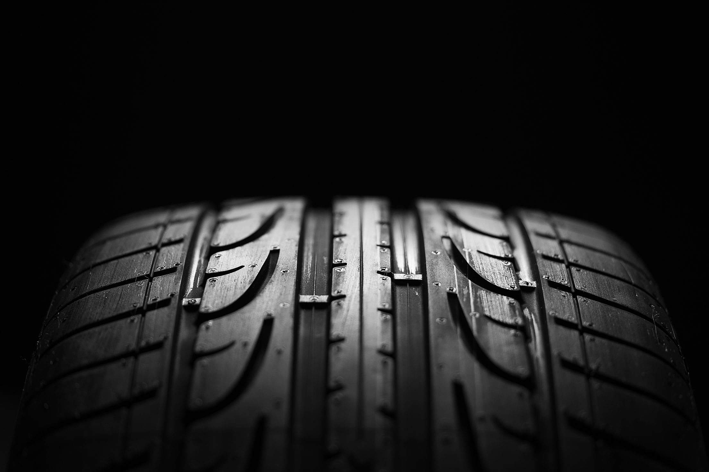
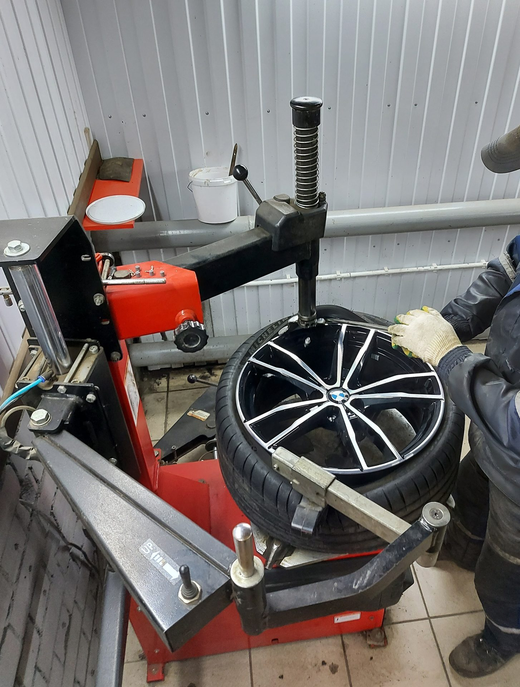

ТОЧНОСТЬ В КАЖДОЙ ДЕТАЛИ ШИНОМОНТАЖНЫЕ ЦЕНТРЫ · СЕВЕРОДВИНСКВаши колёса.
Ваши колёса.
Наша работа.
От сезонной смены до ремонта и хранения.
Заботимся о колёсах, чтобы вы продолжали путь.
БОЛЕЕ 20 ЛЕТ ОПЫТА02 ЦЕНТРА В ГОРОДЕ
01 / ЧТО МЫ ДЕЛАЕМВсё вокруг
Всё вокруг
ваших колёс.
Шесть направлений сервиса.
Одна задача — привести колёса в порядок.
01
Сезонная смена
Колёса готовы к следующему сезону.
от 2 200 ₽02
Шиномонтаж
Монтаж и демонтаж шин, включая низкий профиль.
от 250 ₽03
Балансировка
Для ровного вращения колеса.
от 250 ₽04
Ремонт шин
Проколы и боковые порезы.
от 350 ₽05
Ремонт дисков
Работа со стальными и литыми дисками.
от 500 ₽06
Хранение шин
Ваш второй комплект — на нашем складе.
от 2 700 ₽ / сезонЦены по прайсу сайта. Итоговую стоимость уточняйте при записи.

02 / ЗНАЕМ СВОЁ ДЕЛООпыт, который
Опыт, который
чувствуется
на дороге.
Более 20 лет занимаемся шиномонтажом в Северодвинске. Работаем с колёсами легковых автомобилей, внедорожников, мотоциклов и «Газелей».
20+лет работы
с колёсами
Познакомиться с центрами с колёсами
СЛЕДУЮЩИЙ ПОВОРОТ — К НАМПора заняться
Пора заняться
колёсами?
Выберите удобный центр.
Обсудим работы и время по телефону.